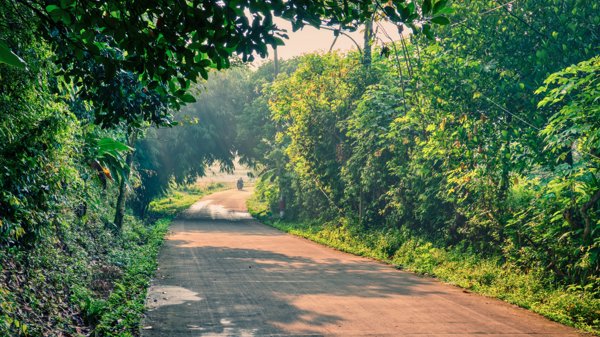
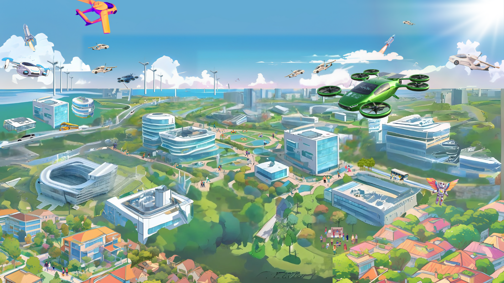
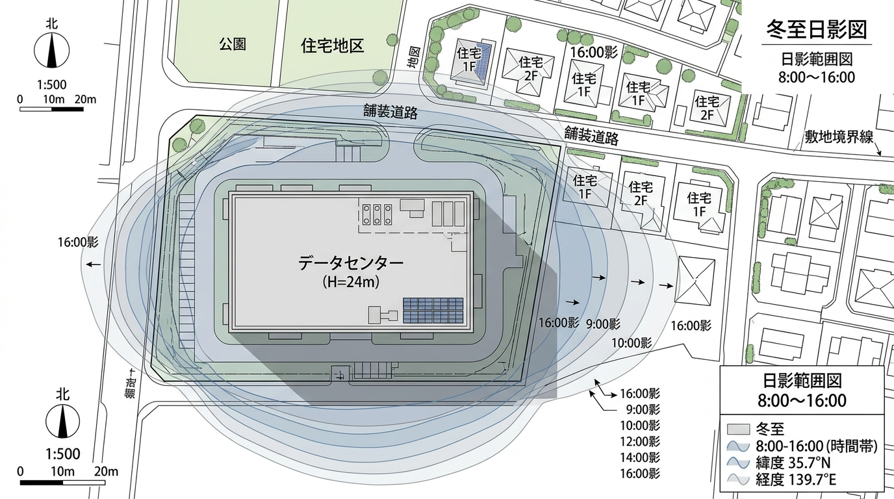
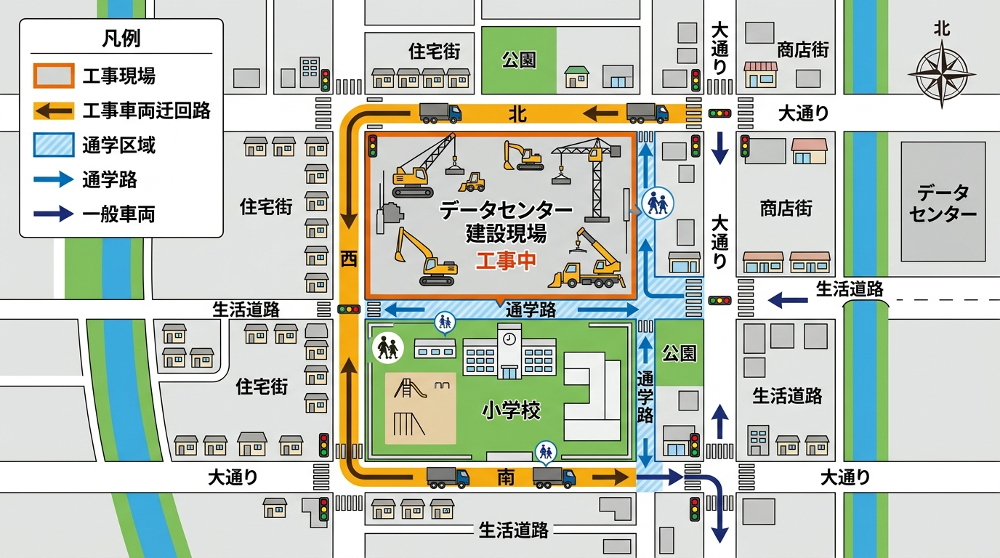

AI等の高度情報社会を支える最先端のデータセンター施設です。24時間365日の安定稼働を実現するため、強固な地盤と高度な電源・通信インフラを備えた設計を行っています。
敷地内における建屋・緑地帯・駐車場・車両動線の配置計画です。近隣住宅地および小学校側には十分なセットバックと緑地帯を確保しています。

| 時期 | 工程内容 | 安全・環境面の配慮事項 |
|---|---|---|
| 2026年9月〜 | 準備工事・整地作業 | 通学路の見守り強化・工事車両規制の開始 |
| 2026年10月〜 | 基礎・本体建設工事 | 低騒音・低振動型重機の使用および環境測定 |
| 2027年以降 | 設備搬入・環境試験運用 | 試運転時の騒音・熱排気実測とデータ公開 |
周辺にお住まいの皆様、および近隣の学校・通学路への影響を最小限に抑えるため、以下の各項目において厳格な基準を設けて対策を実施しています。
周辺住宅や校舎への日影影響を最小限に抑える建物配置設計を実施しています。
低騒音型機器の採用および防音壁の設置により、国の基準値（55dB）を下回る48dB以下を維持します。
ビル風等の風環境変化を事前にシミュレーションし、樹木配置等により風の影響を緩和します。
空調排熱の流れを上空へ拡散させる設計により、周辺生活環境への温度上昇は+0.1℃未満に抑制します。
専用迂回ルートを指定し、通学時間帯（7:30〜8:30 / 15:00〜16:00）の通行を全面禁止します。
市職員・ガードマンによる通学路の見守り（1日8人体制）と歩道整備を進行中です。
| 測定項目 | 国の基準値等 | 周辺の生活空間データ | 当施設からの影響（予測値） |
|---|---|---|---|
| 騒音（昼間） | 55 dB 以下 | 約 45 dB | 48 dB（基準クリア） |
| 電磁波 | 200 μT 以下 | 約 0.1 μT | 0.5 μT（基準クリア） |
| 熱排気 | （周辺気温への影響） | 平均 25℃ | +0.1℃未満（基準クリア） |
年間を通じて最も日影が長くなる「冬至の日影分析結果」です。近隣住宅地および小学校・通学路への日影影響範囲が建築基準法および地域の環境基準を満たしていることを確認しています。

通学路や子どもへの影響を避けるため、以下のルートを工事車両の専用ルートとし、登下校の時間帯（7:30〜8:30 / 15:00〜16:00）は通行を禁止します。

① まず、今回のデータセンターについては、小学校や住宅の隣だから、誘致を進めたものではありません。
② データセンターは、24時間365日の安定した稼働が求められる施設であり、その立地場所の条件として以下が求められます。
③ 今回の土地については、こうしたデータセンターに求められる条件を満たしており、特に、近傍に複数の変電所があることなど、安定した電力を確保しやすい点ををはじめとする立地条件が事業者から評価され、その結果、2023年（令和5年）に議会の議決を経て、当該用地の売却に至ったものです。
④ しかしながら、データセンターとして立地条件が適していることと、生活環境や教育環境の「安全安心」は別次元の問題であると認識しており、市としては、地域の皆さまが抱かれている一つひとつの不安や懸念を丁寧に受け止め、事業者に対して具体的な対策を求めるとともに、法令や基準を満たす「安全」にとどまらず、地域の皆さまの「安心」を第一に、全力で取り組んでまいりたい。
① 説明会等でいただいた意見や要望については、真摯に受け止め、今できる最優先の対策について、具体的に対応しているところです。
② 具体的には以下の対応を行っています。
③ 先週には、関係部局横断の「ひびきの地区データセンターワーキングチーム」を設置（産経、教育、都市戦略、若松区など）し、さらなる対策を検討実施しているところである。
※こちらの回答は現在専門機関によるシミュレーション結果を取りまとめ中です。
※こちらの回答は現在詳細な設計数値を検証・取りまとめ中です。
※こちらの回答は防災計画との整合性を確認・準備中です。
① 北九州学術研究都市（ひびきの地区）は、子どもたちが安心して学び、家族が穏やかに暮らせる環境を大切にしながら、新しい産業や研究も育つまちを目指してきました。
② 大学や研究機関、企業が集まり、新しい技術や産業が生まれる一方で、住宅地や小学校、保育園、商業施設なども整備され、教育や子育て、日々の暮らしが営まれています。
③ そのため、研究や産業の発展と、地域の暮らしを両立させながら、ひびきの地区のまちづくりを進めてきたところです。
④ 今回計画されているデータセンターは、AI をはじめとするデジタル社会を支える重要な施設である一方で、ひびきのには、子どもたちの学びや暮らし、日常の生活があります。
⑤ そのため、データセンターの整備に対しては、通学路の安全や騒音など、地域の皆様が抱かれる一つひとつの不安や懸念を丁寧に受け止めたうえで、地域の暮らしと研究や産業の発展の両方が、今日より良いものになっていくよう、住民の皆様と精一杯考えていきたいと思っております。
① 大切な子どもたちが通う小学校の隣ですから、ご不安の声には誠心誠意お答えしなければと痛感しております。だからこそ、さまざまな形で対話を重ねてまいります。
② さらなる追加対策として、
に向けた準備を進めています。
本サイト下部の「住民意見・質問受付フォーム」または「相談窓口」よりいつでもお寄せいただけます。
本事業に関してご不明な点やご意見がございましたら、以下のフォームより24時間いつでもお寄せください。
お寄せいただいたご意見は、市で内容を確認し、回答を作成した上で本サイトの「ご意見・質問公開ログ」に掲載いたします。
個別の質問を、同様の疑問を持つ市民の皆様に共有できる「公共的な情報資産」として蓄積してまいります。
地域住民の皆様からの直接のご質問やご相談に対応するため、常設の相談窓口を設置いたします。
本Webサイト内の主要セクション一覧です。各カードから該当セクションへ直接移動できます。